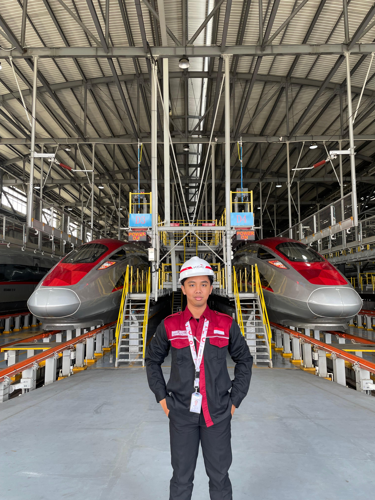
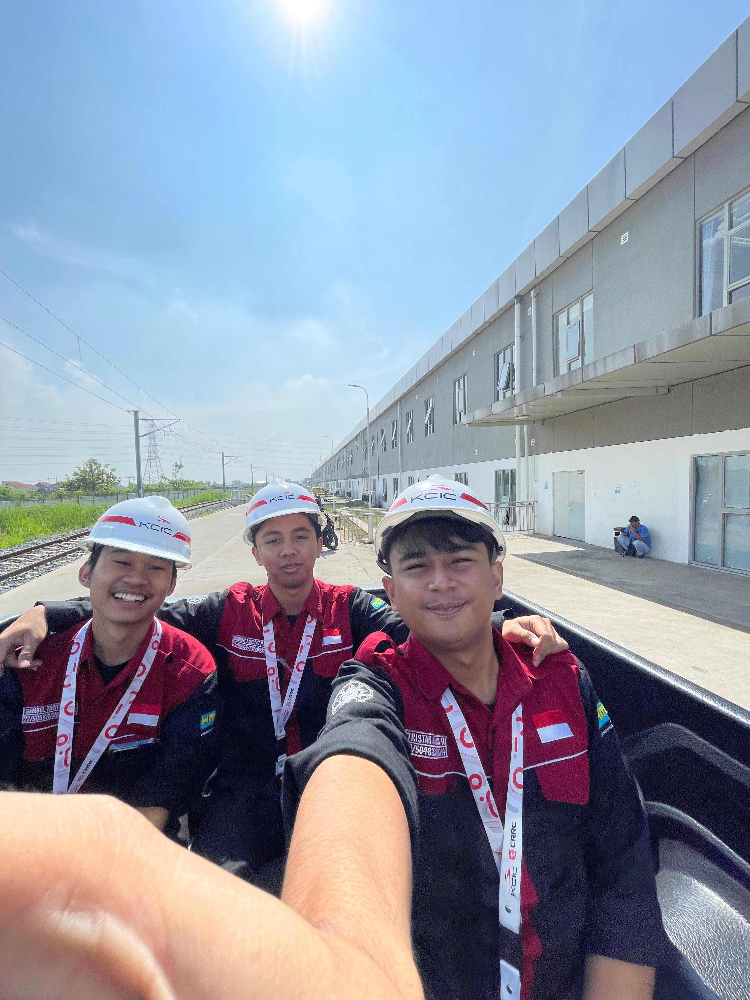
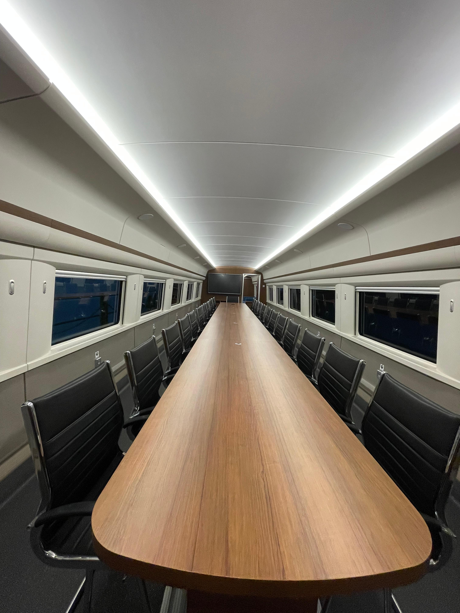
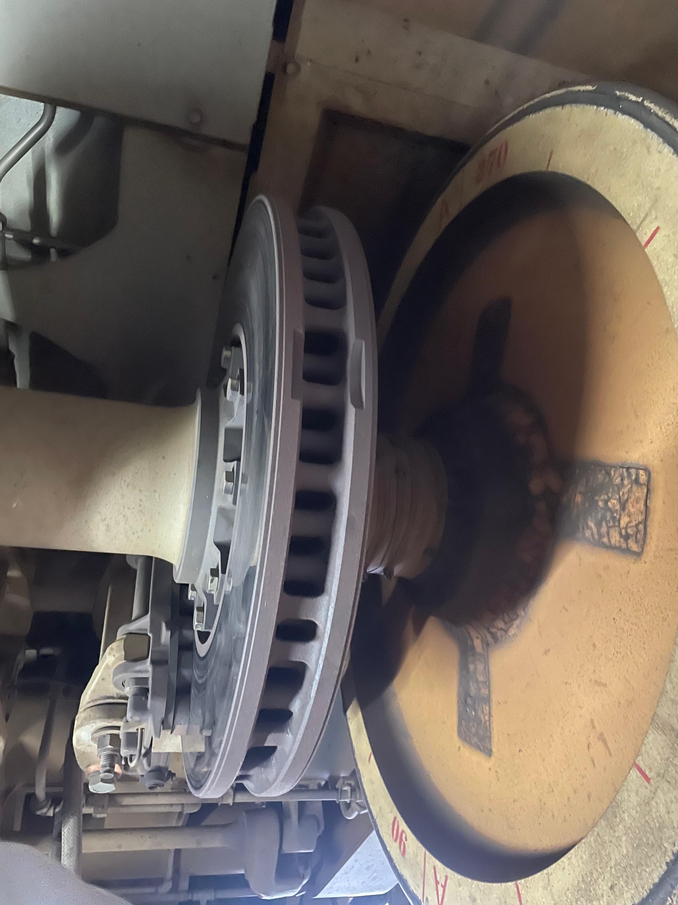
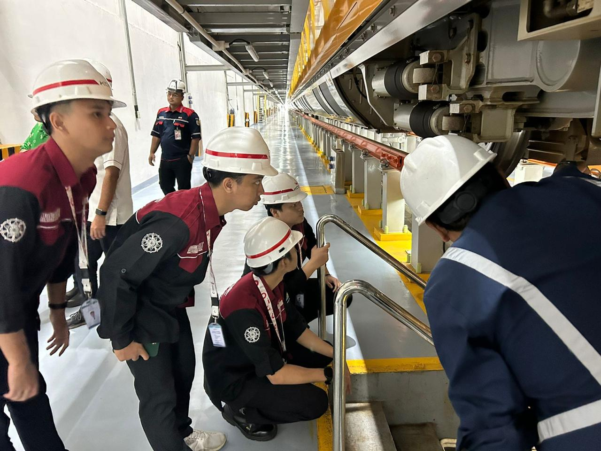
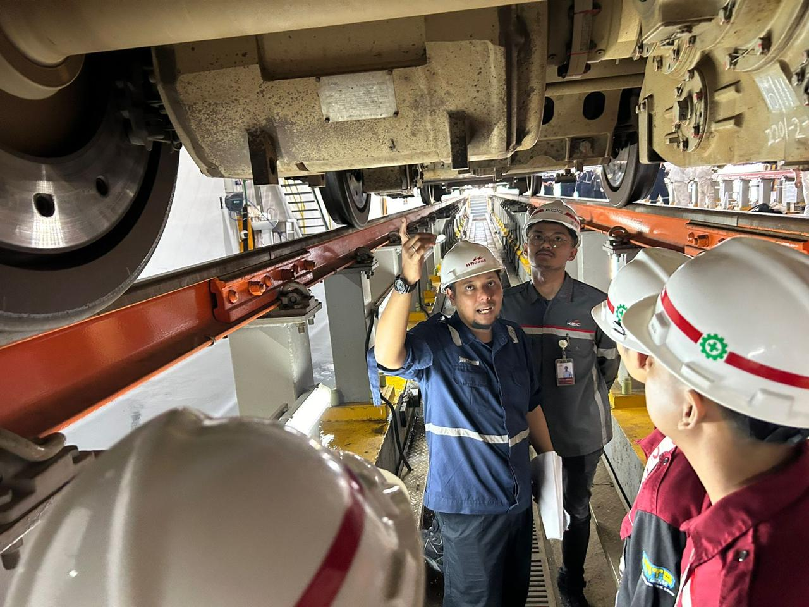
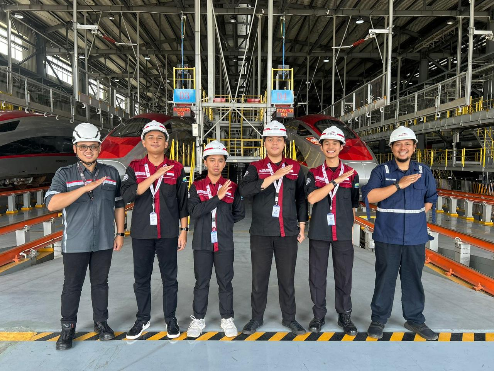
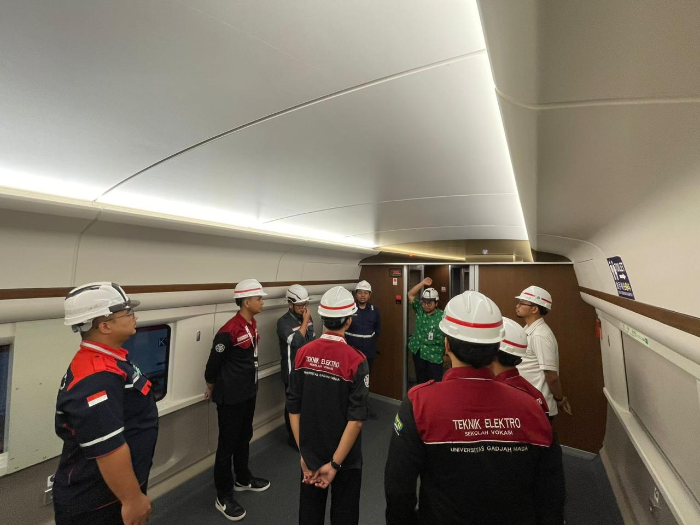
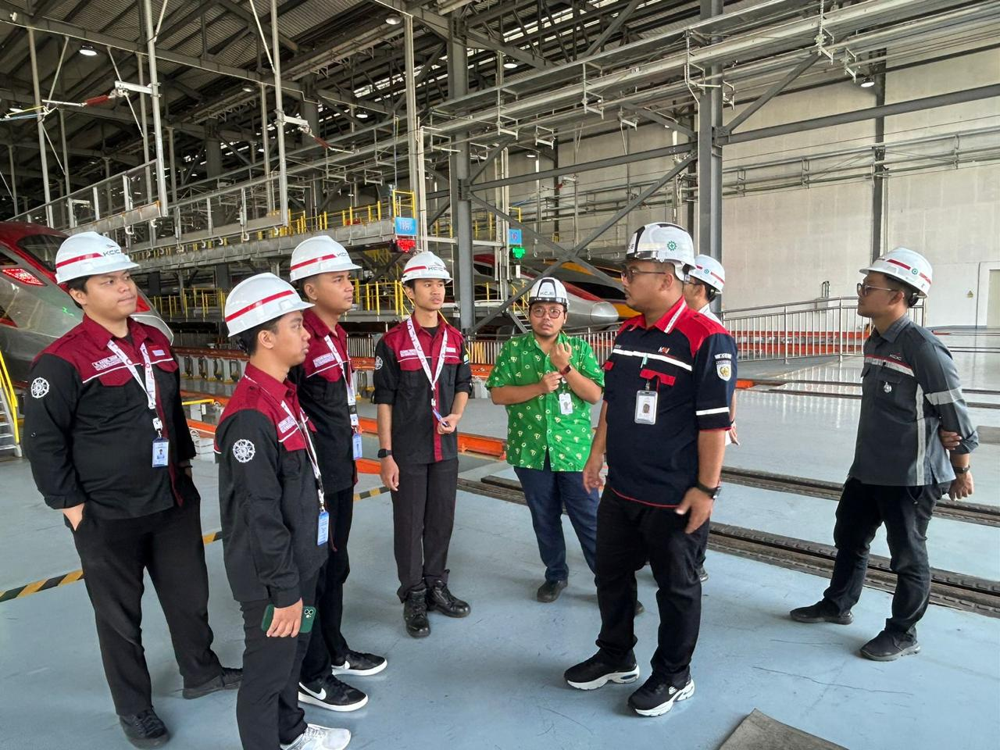
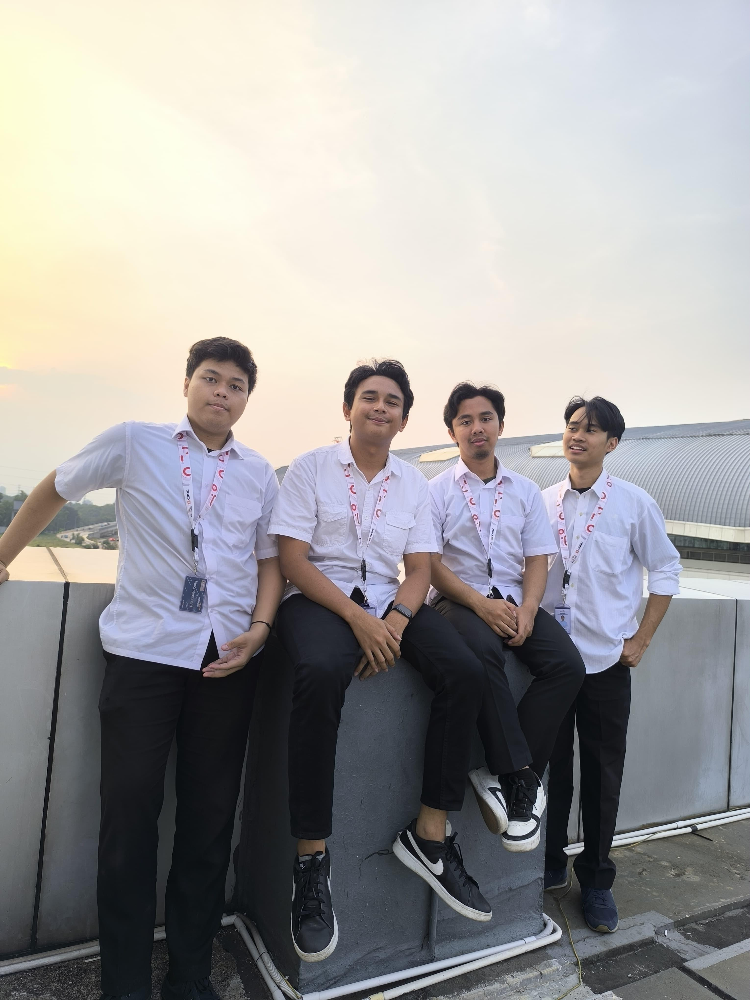

Kembali ke Magang
Magang
PT Kereta Cepat Indonesia China
Power Supply Maintenance and Comprehensive Technology of Signaling
Jakarta - Bandung, Indonesia
Power Supply Maintenance and Comprehensive Technology of Signaling
Jakarta - Bandung, Indonesia
PT Kereta Cepat Indonesia China (KCIC) is a joint venture company formed to develop, build, operate, and maintain the first high-speed rail service in Indonesia and Southeast Asia. The company was established on October 16, 2015, as a collaboration between the Indonesian consortium PT Pilar Sinergi BUMN Indonesia (PSBI) and the Chinese consortium Beijing Yawan HSR Co., Ltd. Through this national strategic project, KCIC provides a modern transportation system that can improve connectivity and public mobility, and stimulate economic growth in various regions. The main project managed by KCIC is the Whoosh High-Speed Rail, which connects Jakarta–Karawang–Padalarang–Tegalluar Summarecon (Bandung) over a track length of approximately 142.3 kilometers. This high-speed rail has an operational speed of up to 350 km/h, reducing the travel time from Jakarta to Bandung to approximately 40–45 minutes. The arrival of Whoosh marks a significant milestone in the modernization of the national transportation system and the introduction of high-speed rail technology in Indonesia. In carrying out its operations, KCIC prioritizes the principles of safety, reliability, innovation, and excellent service. The company implements international-standard high-speed train technology supported by a modern signaling system, an Operation Control Center, and digital-based maintenance. Furthermore, KCIC continues to develop human resource competencies through technology transfer programs and intensive training to support the sustainability of high-speed train operations in Indonesia.
Power Supply Maintenance and Comprehensive Technology of Signaling









